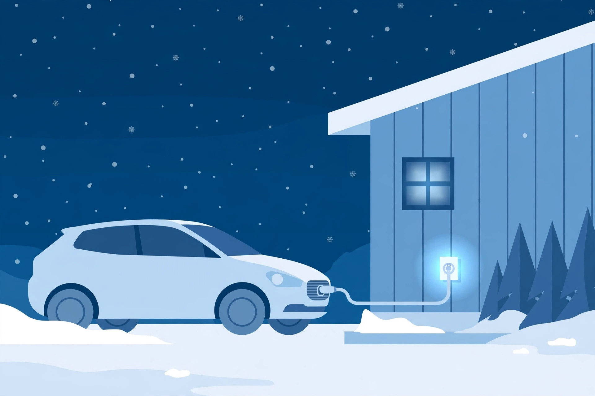

Block Heater Basics: The Timer Trick, the Electricity Math, and Who Actually Needs One

In the coldest parts of Canada, parked cars sprout extension cords from their grilles all winter. That cord is a block heater — a small electric device that pre-warms your engine while the car sits. Most advice stops at "plug it in when it's cold." Here is the rest: how it works, whether your car already has one, what it costs to run, and whether you need one at all.
How a block heater actually works
A block heater is a small electric heating device that plugs into a standard household outlet through a cord usually routed near the front grille. Most are freeze-plug heaters: the element replaces one of the engine's expansion plugs and heats the coolant directly. Heat conducts through the coolant and slowly warms the whole engine block — keeping the oil fluid enough to flow instead of turning thick and sticky.
That matters because cold, thick oil cannot protect the engine properly in the first seconds after startup. A pre-warmed engine starts easier, strains the battery and starter less, and delivers cabin heat sooner, since cabin heat comes from warm coolant.
Do you have one? A five-minute check
Before buying anything, check whether your car already has one:
- Look at the front of the car. Crouch by the grille or bumper and look for a short cord with a standard household plug end, often tucked behind the grille or clipped near the front.
- Follow it back. It should run from the plug into the engine area.
- Ask your shop. At your next service, a technician can confirm in seconds.
No heater and you want one? A shop can install one — get a written quote first.
Do you actually need one?
Not everyone does. Run through this:
- Probably yes if you park outside all winter and overnight lows regularly hit −15°C or below. Also yes for diesels, older or high-mileage cars, and cars that mostly do short trips.
- Probably not if your car sleeps in a garage, your winters are mild, or your daily drive fully warms the engine every trip.
- Maybe if you are in between — street parking, a newer car, lows around −7 to −15°C. Then it is cheap insurance on the worst nights, not a nightly habit.
The electricity math: timer vs. all-night
Here is the part nobody shows. You do not need to run a block heater all night — about four hours before startup is enough, and a simple outlet timer can switch it on in the small hours. Worked example (Ontario rates, checked 2026-10-11 — your rate will differ, the formula is what matters):
- Heater: 1,000 watts, a typical figure for a compact car in one buying guide. Check the tag on your own heater.
- Rate: 9.8¢/kWh off-peak. Delivery charges and HST are separate.
- Timer, 3 hours: 1 kW × 3 h × $0.098 = about 29¢ per day.
- All night, 10 hours: about 98¢ per day.
Over a 120-day winter: roughly $35 with a timer vs. $118 plugged in all night. The U.S. Department of Energy is cited as reporting up to 10% better fuel economy from block-heater use.
The formula to keep: (watts ÷ 1000) × hours × your electricity rate = cost per day.
Heater types compared
| Type | What it warms | Best for |
|---|---|---|
| Freeze-plug heater | Coolant, via the engine block | Most cars; the most common and efficient type |
| Oil-pan heater | Oil directly | Diesels and very cold climates |
| In-line coolant heater | Coolant, along the coolant line | Even heat distribution through the system |
| Magnetic heater | Block or oil-pan surface | Temporary/portable use; sticks on magnetically |
Using it safely
Use an outdoor-rated extension cord, keep connections off wet ground, and inspect the cord each fall for cracks. Tie unplugging to brushing snow off the windshield, so you never drive off with the cord attached.
FAQ
Does a block heater charge the battery?
No. It warms the engine, so the battery and starter work less hard — but it
does not put charge back into the battery.
Will it heat up my cabin faster?
Yes — cabin heat comes from warm coolant, so pre-warmed coolant means warm air
from the vents sooner.
The bottom line
A block heater is cheap winter insurance if you park outside in real cold: check whether you already have one, put it on a timer, and run the math on your own hydro rate.